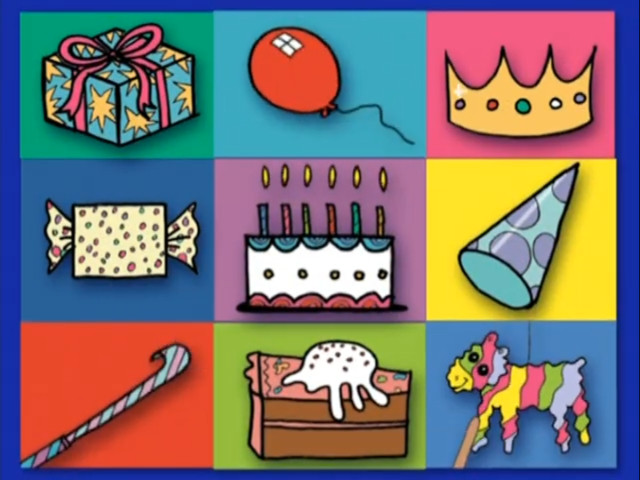
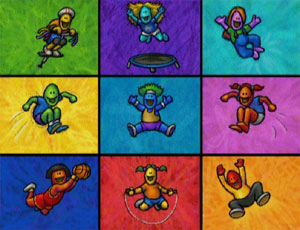
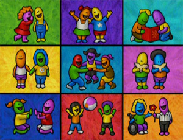

DVD Releases Only
DVD
Oznoz (formerly)
|
|---|
| Title: El mundo de Elmo DVD Releases Only DVD Oznoz (formerly) |
|  |
|---|
| ¡Cumpleaños, Juegos y Más! archive.org |
 |
| ¡De pies a cabeza con Elmo! archive.org |
 |
| ¡Explora el aire libre! archive.org |
 |
| ¡Elmo Tiene Dos Oidos, Manos y Pies! archive.org |
|  |
| ¡Alcanza el Cielo! archive.org |
|  |
| ¿Qué te hace feliz? archive.org |
 |
| Opuestos archive.org |
 |
| Vacaciones de Verano archive.org |
 |
| ¡Los Pingüinos y más Amigos! archive.org |